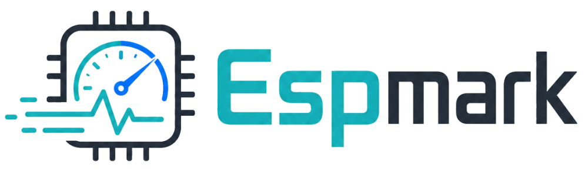

Checking browser
Community ESP32 benchmark
Flash, run, and collect ESP32 benchmark results from one page.
This local test page reads espmark output over USB serial and stores submitted results in your browser. Firmware flashing and server-side submissions are the next roadmap steps.
Live Serial
Connect an ESP32 board to begin.
Current Result
No result yet
Run the benchmark, then request JSON from the board.
Local Result Table
| Board | Chip | CPU | add/mul | div/mod | branch | crc-like | Saved |
|---|
Roadmap
- Now: USB serial result capture and local result table.
- Next: prebuilt firmware binaries and web flashing.
- Then: backend API, public submissions, moderation, compare view.